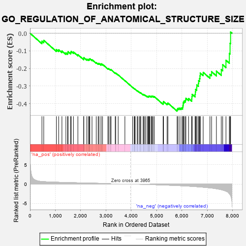
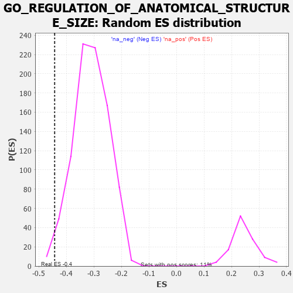

| | | Dataset | 7d |
| Phenotype | NoPhenotypeAvailable |
| Upregulated in class | na_neg |
| GeneSet | GO_REGULATION_OF_ANATOMICAL_STRUCTURE_SIZE |
| Enrichment Score (ES) | -0.44290924 |
| Normalized Enrichment Score (NES) | -1.4291106 |
| Nominal p-value | 0.016930023 |
| FDR q-value | 0.28059575 |
| FWER p-Value | 1.0 |
Table: GSEA Results Summary

Fig 1: Enrichment plot: GO_REGULATION_OF_ANATOMICAL_STRUCTURE_SIZE
Profile of the Running ES Score & Positions of GeneSet Members on the Rank Ordered List
| PROBE | GENE SYMBOL | GENE_TITLE | RANK IN GENE LIST | RANK METRIC SCORE | RUNNING ES | CORE ENRICHMENT | | 1 | LRP1 | | | 470 | 0.648 | -0.0452 | No |
| 2 | SRF | | | 542 | 0.615 | -0.0405 | No |
| 3 | AKT1 | | | 1040 | 0.476 | -0.0930 | No |
| 4 | NCK2 | | | 1131 | 0.458 | -0.0943 | No |
| 5 | WDR36 | | | 1260 | 0.437 | -0.1008 | No |
| 6 | P2RY1 | | | 1416 | 0.407 | -0.1114 | No |
| 7 | IFRD1 | | | 1486 | 0.392 | -0.1114 | No |
| 8 | E2F4 | | | 1501 | 0.390 | -0.1045 | No |
| 9 | RNF6 | | | 1605 | 0.373 | -0.1092 | No |
| 10 | CDK4 | | | 1626 | 0.370 | -0.1035 | No |
| 11 | PLOD3 | | | 1715 | 0.353 | -0.1068 | No |
| 12 | PAK3 | | | 1889 | 0.322 | -0.1216 | No |
| 13 | SNF8 | | | 2119 | 0.288 | -0.1443 | No |
| 14 | ISLR2 | | | 2124 | 0.287 | -0.1384 | No |
| 15 | CREB1 | | | 2243 | 0.269 | -0.1473 | No |
| 16 | WASF1 | | | 2303 | 0.259 | -0.1490 | No |
| 17 | ANO6 | | | 2339 | 0.255 | -0.1478 | No |
| 18 | SIN3A | | | 2361 | 0.251 | -0.1449 | No |
| 19 | KDM1A | | | 2447 | 0.237 | -0.1504 | No |
| 20 | VAV3 | | | 2614 | 0.210 | -0.1668 | No |
| 21 | DSCAM | | | 2689 | 0.200 | -0.1717 | No |
| 22 | SLIT2 | | | 2724 | 0.195 | -0.1717 | No |
| 23 | FER | | | 2803 | 0.183 | -0.1775 | No |
| 24 | BRK1 | | | 2805 | 0.183 | -0.1736 | No |
| 25 | WDTC1 | | | 2865 | 0.172 | -0.1772 | No |
| 26 | MAP2 | | | 3074 | 0.140 | -0.2005 | No |
| 27 | GPX1 | | | 3109 | 0.135 | -0.2018 | No |
| 28 | GCH1 | | | 3166 | 0.127 | -0.2061 | No |
| 29 | TWF1 | | | 3199 | 0.123 | -0.2074 | No |
| 30 | FMN1 | | | 3363 | 0.095 | -0.2260 | No |
| 31 | GMFB | | | 3381 | 0.091 | -0.2261 | No |
| 32 | CDK5 | | | 3480 | 0.080 | -0.2368 | No |
| 33 | HTR1B | | | 3745 | 0.035 | -0.2695 | No |
| 34 | ATG5 | | | 4051 | -0.016 | -0.3079 | No |
| 35 | MTOR | | | 4114 | -0.025 | -0.3152 | No |
| 36 | ABL1 | | | 4125 | -0.027 | -0.3159 | No |
| 37 | WNK3 | | | 4153 | -0.034 | -0.3186 | No |
| 38 | ARPC2 | | | 4232 | -0.047 | -0.3274 | No |
| 39 | RPTOR | | | 4252 | -0.050 | -0.3287 | No |
| 40 | BAG4 | | | 4314 | -0.061 | -0.3351 | No |
| 41 | ADRB2 | | | 4352 | -0.068 | -0.3383 | No |
| 42 | GRIP2 | | | 4372 | -0.071 | -0.3391 | No |
| 43 | LRRK2 | | | 4467 | -0.087 | -0.3491 | No |
| 44 | EPS8 | | | 4474 | -0.088 | -0.3479 | No |
| 45 | ILK | | | 4510 | -0.096 | -0.3502 | No |
| 46 | ABI2 | | | 4554 | -0.106 | -0.3533 | No |
| 47 | RAB21 | | | 4620 | -0.122 | -0.3588 | No |
| 48 | ARPC3 | | | 4659 | -0.129 | -0.3607 | No |
| 49 | CLCN3 | | | 4678 | -0.134 | -0.3600 | No |
| 50 | LIMK1 | | | 4684 | -0.136 | -0.3576 | No |
| 51 | ARF6 | | | 4704 | -0.140 | -0.3569 | No |
| 52 | WASF3 | | | 4730 | -0.145 | -0.3569 | No |
| 53 | RTN4 | | | 4783 | -0.154 | -0.3601 | No |
| 54 | FLII | | | 4795 | -0.156 | -0.3580 | No |
| 55 | WDR1 | | | 4824 | -0.163 | -0.3579 | No |
| 56 | DLG1 | | | 4860 | -0.169 | -0.3586 | No |
| 57 | CAPZB | | | 4908 | -0.179 | -0.3605 | No |
| 58 | SSH1 | | | 5254 | -0.258 | -0.3986 | No |
| 59 | PTEN | | | 5262 | -0.261 | -0.3937 | No |
| 60 | PICK1 | | | 5265 | -0.263 | -0.3880 | No |
| 61 | LATS1 | | | 5412 | -0.298 | -0.3999 | No |
| 62 | IST1 | | | 5442 | -0.305 | -0.3968 | No |
| 63 | BBS4 | | | 5806 | -0.407 | -0.4338 | Yes |
| 64 | ANXA7 | | | 5827 | -0.413 | -0.4271 | Yes |
| 65 | ARPC4 | | | 5886 | -0.430 | -0.4249 | Yes |
| 66 | ACTN2 | | | 5960 | -0.458 | -0.4240 | Yes |
| 67 | JMY | | | 6023 | -0.479 | -0.4212 | Yes |
| 68 | RAC1 | | | 6036 | -0.484 | -0.4119 | Yes |
| 69 | ADD2 | | | 6046 | -0.487 | -0.4022 | Yes |
| 70 | EVL | | | 6052 | -0.490 | -0.3919 | Yes |
| 71 | DBNL | | | 6084 | -0.501 | -0.3847 | Yes |
| 72 | GBA2 | | | 6136 | -0.515 | -0.3796 | Yes |
| 73 | ROCK1 | | | 6152 | -0.520 | -0.3700 | Yes |
| 74 | SVIL | | | 6259 | -0.558 | -0.3710 | Yes |
| 75 | BBS2 | | | 6383 | -0.608 | -0.3730 | Yes |
| 76 | TRPM4 | | | 6390 | -0.612 | -0.3602 | Yes |
| 77 | CDKL3 | | | 6401 | -0.618 | -0.3477 | Yes |
| 78 | TRPV4 | | | 6515 | -0.668 | -0.3471 | Yes |
| 79 | ACE | | | 6526 | -0.674 | -0.3333 | Yes |
| 80 | KANK1 | | | 6536 | -0.678 | -0.3193 | Yes |
| 81 | CLN3 | | | 6580 | -0.699 | -0.3092 | Yes |
| 82 | ARF1 | | | 6583 | -0.701 | -0.2938 | Yes |
| 83 | PTPRS | | | 6646 | -0.738 | -0.2852 | Yes |
| 84 | RAB5A | | | 6655 | -0.741 | -0.2697 | Yes |
| 85 | PAK1 | | | 6691 | -0.757 | -0.2573 | Yes |
| 86 | EGFR | | | 6708 | -0.765 | -0.2423 | Yes |
| 87 | GSK3B | | | 6719 | -0.768 | -0.2264 | Yes |
| 88 | FHOD3 | | | 6835 | -0.834 | -0.2224 | Yes |
| 89 | RYK | | | 7102 | -1.000 | -0.2339 | Yes |
| 90 | COTL1 | | | 7166 | -1.046 | -0.2185 | Yes |
| 91 | WDR35 | | | 7357 | -1.225 | -0.2154 | Yes |
| 92 | DCC | | | 7550 | -1.470 | -0.2070 | Yes |
| 93 | KANK3 | | | 7605 | -1.559 | -0.1790 | Yes |
| 94 | PLS1 | | | 7734 | -1.855 | -0.1539 | Yes |
| 95 | ECE1 | | | 7867 | -2.498 | -0.1150 | Yes |
| 96 | CAV3 | | | 7896 | -2.739 | -0.0574 | Yes |
| 97 | ASIC2 | | | 7917 | -2.995 | 0.0069 | Yes |
Table: GSEA details [plain text format]

Fig 2: GO_REGULATION_OF_ANATOMICAL_STRUCTURE_SIZE: Random ES distribution
Gene set null distribution of ES for GO_REGULATION_OF_ANATOMICAL_STRUCTURE_SIZE